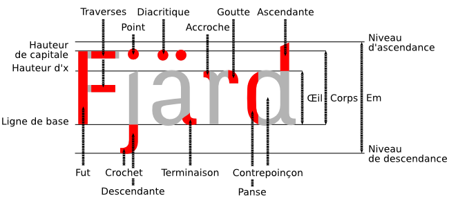

Glossaire
Alphabet
- système organisé composé de graphèmes représentant des unités fondamentales d'écriture. Les alphabets permettent en général de décrire des langues sous forme écrite simplifiée. Ils sont très variés selon les langues et les cultures et peuvent être basés sur des principes variés (phonétiques, mimétiques, idéographique...).
- Antimoine
- métal associé au plomb pour la fabrication de caractères mobiles afin d'augmenter leur dureté
- Approche
- Espaces internes gauche ou droite du glyphe qui encadrent la partie dessinée de la lettre et définissent l'espacement fondamental que cette lettre aura par rapport à une autre. L'approche est définie à gauche par le point d'origine à l'intérieur du vecteur de chasse.
- Bottom-up
- Voir Inductive
- Caractères
- Aspect de la lettre tel qu'il est défini et normalisé dans un alphabet. Un caractère peut posséder plusieurs glyphes* pour le représenter, même à l'intérieur d'une seule fonte. Unicode* est une norme qui définit les caractères. Le créateur de fonte utilise cette norme pour donner aux caractères une vie graphique.
- Chasse
- Largeur de référence d'un caractère
-
Classifications
Les classifications sont des typologies servant à classer les styles de typos en fonction de critères anatomiques (par ex. empattement, contraste). La classification la plus courante est la classification Vox-ATypI. Cette dernière classe les typos en quatre familles et dix classes.
Famille des caractères classiques
Famille des caractères modernes
- Les humanes
- Les garaldes
- Les réales
Famille des caractères d'inspiration calligraphique
- Les didones
- Les mécanes
- Les linéales
Les caractères non latins
- Les incises
- Les scriptes
- Les manuaires
- Les fractures
Pour une description, voir l'article détaillé dans Wikipédia .
D'autres classifications existent, plus basiques comme la classification Thibaudeau ou plus sophistiquées comme la Codex 1980 de Jean Alessandrini. Toutefois, toutes ces classifications ont en point commun un certain latino-centrisme, dans la mesure où l'analyse des fontes latines est très détaillée, mais les fontes non latines apparaissent dans une catégorie fourre-tout.
- Codage
- Le codage de caractère définit la façon dont un caractère est référencé dans un système informatisé. Unicode* est une évolution des codes précédents qui permet d’avoir accès aux codages de tous les caractères linguistiques connus.
-
Codex 1980
Voir Classification
- Corps
- Hauteur d'un caractère, qui le diffère théoriquement de la chasse*. En pratique, la typographie numérique associe largement les deux. De plus contrairement à la typographie au plomb pour laquelle chaque corps pouvait posséder un dessin adapté, la caractéristique vectorielle des systèmes de fonte actuels, s'ils facilitent le travail, ont une approche utilisation et homothétique du corps, moins riche que la précédente approche optique plus qualitative.
- Crénage
- Espacement entre deux caractères qui peut être défini par défaut dans les métriques de la fonte ou par l'utilisateur au moment de la composition si le logiciel le permet. Le crénage est l'action de modifier l'approche entre lettres.
- Déductive (méthode)
- Méthode procédant de la déduction, principe logique consistant à tirer des conclusions à partir de principes. Le principe inverse est celui de l'induction. Voir Inductive (méthode).
- Diacritique
- Signe accompagnant une lettre ou un graphème placé au-dessus ou au-dessous: un accent grave, une cédille ou un tréma sont des exemples de signes diacritiques.
- Fonderie
- Traditionnellement atelier ou industrie qui produisait les fontes en métal. Par analogie, le terme a été conservé dans le monde numérique.
- Fonte
- La fonte, appelée ainsi car historiquement issu de la fonte de plomb et d'antimoine*, désigne aujourd'hui le fichier numérique grâce auquel on peut utiliser la typo.
- Fstype
- Champ du standard OpenType qui permet au créateur d'indiquer les variations de permissions (ou plus précisément les restrictions) à l'utilisateur relatives à l'incorporation de sa fonte dans un document comme le PDF. Les fontes libres devraient avoir ces restrictions remises à zéro sans quoi des problèmes d'usage peuvent apparaître: l'impression est limitée, l'installation est interdite, l'usage en tant que webfont est limité.
- Glyphes
- Matérialisation du caractère* dans une création géométrique et métrique stylisée et visuelle.
- Google Web Font
- Service gratuit de Google à destination des webmasters et auteurs d'applications web dans le but de constituer un répertoire de fontes libres en particulier pour favoriser et promouvoir les nouvelles possibilités de référencement des fontes avec la propriété CSS @font-face et ainsi enrichir la typographie du web jusqu'alors assez très limitée. Toutes les fontes publiées sont libres et la grande majorité est publiée sous OFL. http://www.google.com/webfonts (taper dans un terminal "hg clone https://googlefontdirectory.googlecode.com/hg" après installation de mercurial)
- Graisse
- La graisse définit l'épaisseur des fûts donnant une impression de lourdeur plus ou moins grande à la typo. Les graisses régulièrement utilisées sont (du plus fin au plus épais): very light, light, thin, book, medium, demi bold, heavy, black, extra black. Certaines autres appellations sont régulièrement utilisées : Normal, regular, semi-bold, extra-bold. La typographie web à l'aide du CSS permet d'adopter une valeur chiffrée par multiple de 100.
- Graphite
- Graphite est un moteur libre de rendu multi-plateforme pour scripts complexes. Il offre des fonctions avancées nécessaires au fonctionnement des systèmes d'écriture nécessitant de la mise en forme de caractères contextuels, des ligatures, du réordonnancement, des glyphes séparés, de la multidirectionalité, de l'empilement d'accents et des positionnements complexes. Il est plus flexible que OpenType. Cette bibliothèque est disponible dans LibreOffice et Mozilla Firefox. http://scripts.sil.org/RenderingGraphite
- Gris typographique
- Impression produite par la vision générale d'un texte. Densité moyenne du gris résultant de la juxtaposition de multiples caractères noirs sur fond blanc
- Hexadécimal
-
Le système hexadécimal est un système de numérotation en base 16 répandu en informatique. Il utilise 16 symboles (10 chiffres, 0 à 9 ,et 6 lettres, A à F pour les valeurs 10 à 16).
- Hinting
- Optimisation du caractère pour un affichage correct sur les écrans dans le respect de la grille de pixels. Le hinting est une étape longue qui peut cependant être automatisée pour un résultat recevable quasi immédiat. Dans FontForge, le hinting peut être généré par Hints > Génération automatique de hints
- Inductive (méthode)
- Méthode procédant de l'induction, principe logique consistant à dégager des principes à partir de l'observation. Le principe inverse est celui de la déduction (voir Déductive (méthode)).
- Interopérabilité
- Utilisation de protocoles ou normes communes pour assurer la compatibilité des documents numériques réalisés ou utilisés dans des environnements différents.
- Kerning
- voir Crénage
-
Majuscule (différence entre capitale et)
-
La majuscule désigne la lettre en début de mot. Le plus souvent la majuscule est représentée par une capitale, d'où la confusion. La capitale est le caractère servant à composer en grandes lettres.
- Œil
- L’œil ou Hauteur d’œil est défini par la hauteur des bas de casse aux capitales. Il indique donc une proportion est permet d'apprécier l'impression optique que donnent des typos à corps identique. Elle est donc à différencier, par exemple, du corps* qui prend aussi en compte les ascendantes, descendantes et l'interligne ou de la hauteur d'x qui est la hauteur géométrique des bas de casse.
- OpenType
- OpenType est le format de fonte standard. Par rapport à ces prédécesseurs, il a l'avantage d'être entièrement multi-plateforme, d'intégrer de nombreux systèmes graphiques linguistiques grâce à sa compatibilité avec Unicode*. Pour le graphiste, OpenType offre entre autres des fonctions avancées comme la possibilité d'avoir plusieurs glyphes pour un caractère, d'avoir des ligatures avancées. À noter qu'il existe deux variantes de l'OpenType, l'OpenType à contours Postscript (extension .otf) et l'OpenType à contours TrueType (extension .ttf).
- Piratage
- Le piratage est l'accès et l'utilisation de ressources et de logiciels contre la volonté de leurs auteurs telle qu'elle est indiquée dans une licence. Cela désigne aussi l'action de redistribuer ces ressources et logiciels à d'autres, en violation de la volonté des auteurs originaux.
PostScript
Format et langage de description de page et de description de formes vectorielles mis au point par Adobe en 1982. Cette technologie est historiquement à l'origine de l'avènement de la PAO (Publication Assistée par Ordinateur).
- Propriétaire
- Un logiciel propriétaire est un logiciel qui nie ses libertés à l'utilisateur et au développeur. Il est qualifié de propriétaire parce que son auteur conserve jalousement tous les droits pour lui et n'en transmet aucun ou trés peu. Les caractéristiques de ce logiciel sont font en sorte qu'il ne satisfait pas aux quatre libertés fondamentales de la définition du logiciel libre: liberté d'usage non-restreint, liberté d'étudier, liberté de modifier et liberté de redistribuer.
- Privateur
- Voir Propriétaire. Cette expression est parfois utilisée à la place de propriétaire notamment en raison de sa plus grande adéquation avec le sens original de proprietary en anglais.
- Photocomposition
- La photocomposition consiste en la composition (arrangement) de lignes de texte destiné à transiter par un principe de reproduction photographique. La photocomposition est la technologie principale qui a remplacé la composition au plomb et qui a accompagné le développement de la typographie numérique.
- Phototitrage
- Le phototitrage est une technologie très en vogue dans les années 70-80, tirée de la photocomposition, adaptée à la composition de titres, composés à façon et permettant d'importantes déformations optiques sur la lettre.
- Police
- Le mot police appliquée à la typographie dans l'expression « police de caractères » date de l'époque de la typographie au plomb et a été forgée par analogie avec l'expression police d'assurance. Elle désigne le récapitulatif des caractères de la casse (meuble servant à stocker les caractères en plomb). Pour aller plus loin, voir « Il y a police et police » sur Projet Babel : http://projetbabel.org/mots/index.php?p=dicter
- Point
- Unité de mesure largement utilisée en typographie et en impression. Le point pica large de 0,351mm environ; le point postscript fait 1/72° de pouce et le point Didot 0,376mm environ
- Scripte
- Se dit de l'appartenance d'une typo par sa ressemblance à l'écriture manuscrite notamment dans certaines classifications ayant cours. À ne pas confondre avec le mot anglais script qui désigne le système d'écriture employé.
-
Système d'exploitation
-
Un système d'exploitation est une série de composants logiciels permettant l'usage d'un ordinateur: noyau, libraires de bas niveau, pilotes, interface graphique, utilitaires et programmes divers. Par exemple: Windows, Mac OS X, GNU/Linux(Debian, Ubuntu, Fedora), OpenBSD, Android, iOS, Solaris, etc.
- Top-down
- Voir déductive
-
Thibaudeau
-
Voir classification
- Unicode
- Unicode est la norme actuelle la plus répandue permettant de
décrire le codage des caractères dans un fichier numérique. Elle marque
une transition majeure permettant une plus grande interopérabilité et
pérennité des informations entre les différentes plateformes et les
différentes générations des outils informatiques. Il existe toute
une série d'encodages obsolètes (legacy encoding) auxquels Unicode
apporte une solution. Il en existe plusieurs variantes dont la plus
répandue est UTF-8. http://www.unicode.org - http://www.unicode.org/fr
-
Vox / Vox-ATypI
-
Voir classification
- W3C
- W3C est un consortium créé au mois d'octobre 1994 par Tim Berners-Lee pour promouvoir la compatibilité et donc la normalisation des technologies du World Wide Web. Il développe met à disposition une série d'informations publiques concernant à destination des développeurs et des utilisateurs. Il faut souligner que le W3C rassemble aussi une série d'entreprises qui malgré leur tendance marquée pour le logiciel privateur et les brevets participe à la définition et à l'implémentation de standards ouverts. http://www.w3c.org
- XeLaTeX
- XeLaTeX est une composante de la suite logicielle XeTeX qui est une version avancée du système de mise en page et de publication TeX permettant de tirer parti du standard Unicode et des fonctionnalités de typographie avancée comme OpenType et Graphite: http://scripts.sil.org/XeTeX.